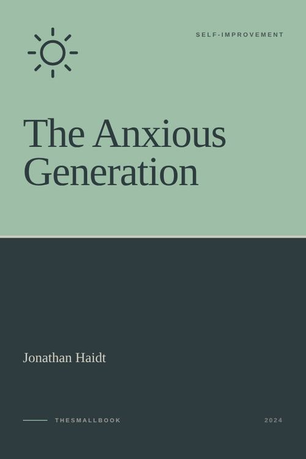
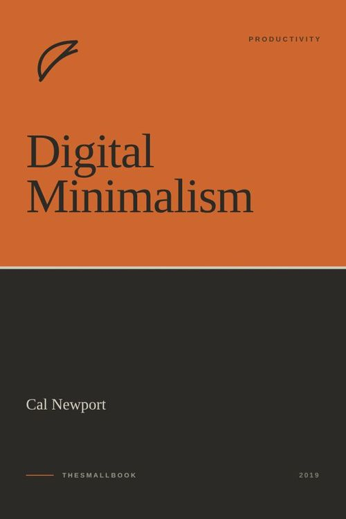

Library › Ask the Library › How much screen time should my kids get?
How much screen time should my kids get?
The short answer
The phone-based childhood is the greatest uncontrolled experiment in history, and the data is bad. Delay smartphones, make schools phone-free, and restore unsupervised play.
The books behind the answer

The Anxious Generation
Jonathan Haidt · 2024 · 8 min · 6 lessons
A play-based childhood was replaced by a phone-based one - and anxiety exploded. Restore play, delay phones, and set boundaries.
- The Great Rewiring: What Changed in 2010: Teen anxiety doubled exactly when smartphones saturated childhood. The curves line up.
- Play-Based vs Phone-Based Childhood: Free, risky, unsupervised play builds resilience; curated feeds build anxiety.
- The Four New Norms: No smartphones before high school, no social media before 16, phone-free schools, more play.

Digital Minimalism
Cal Newport · 2019 · 8 min · 6 lessons
Stop optimizing your phone - delete, simplify and rediscover: solitude, conversation and leisure that actually recharge.
- The Digital Declutter: The same principle applies to kids: remove the optional tech and see what they rediscover.
A failure that proves it
Why did Clubhouse fail?
2023 · STARTUP · Loss: $4B valuation → cultural footnote
Clubhouse burned hot on hype, then vanished when attention moved. Attention built on hype has no foundation.
Ask what your growth is borrowing from: a moment, a gimmick, or a real recurring need. Features get copied in a quarter - retention loops and owned communities are the only defensible parts.
Questions people ask next
Can I read this in Hindi?
Yes. This answer is written in simple English. Open any linked book and choose Hindi or Hinglish to read the full lessons in your language, with audio where available.